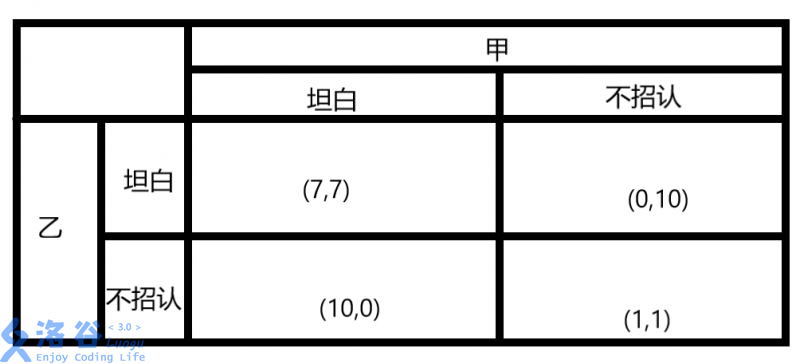
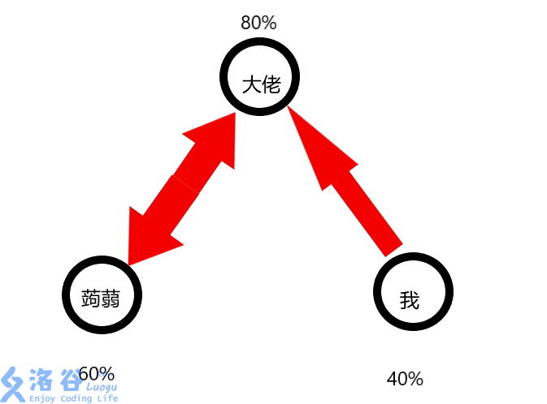
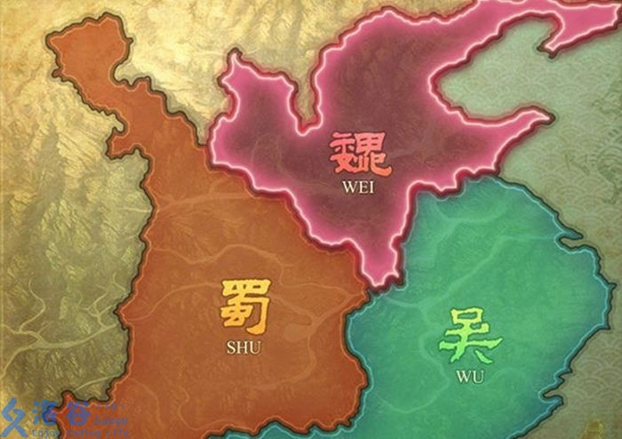

[转载]洛谷日报#18 简单食用的博弈论
博弈论又被称为对策论（Game Theory），既是现代数学的一个新分支，也是运筹学的一个重要学科。学习博弈论，可以指导我们这个充满竞争的世界中，我们要怎么做才能让自己（或者自己的集体）利益最大化。（《百度百科》）
特别鸣谢：@daifucong 感谢指出文章中的错误。
博弈时往往有三种结果：负和博弈、零和博弈与正和博弈，用通俗的话解释就是两败俱伤、一方获利一方亏损和双赢。正和博弈当然是最好的结果，但是往往无法达成。
博弈论有很多的种类，我们介绍其中的几种。
一. 囚徒博弈论——为何走向穷途末路？
有一个广为流传的故事：两个罪犯甲、乙入室盗窃并将屋子的主人杀害，被捕后分别审讯，他们都只承认盗窃罪，不承认故意杀人罪，这样他们都会被判处1年有期徒刑。这似乎对他们来说是最好的情况，但是后来他们却纷纷承认故意杀人罪，为什么呢？
原因很简单：他们是分开审讯的。
假设盗窃罪判刑1年，故意杀人罪判刑8年，被别人揭穿会加刑1年，坦白减刑2年，那么就可以绘制一个简易的博弈论模型：

图真是太不美了(●—●)
明明可以少坐6年牢，为什么要招供呢？不妨从甲和乙的角度来考虑：由于不知道对方的消息，甲会认为，我不知道能不能相信乙，万一他先招供了，我就会坐10年的牢，为了不引起最坏的后果，还能够释放，我必须先招认！同样的，乙的想法和甲类似，再加上警察煽风点火，于是便纷纷招供，最后的结果是两人一起坐7年的牢。

这就呈现了所谓博弈论中的“纳什均衡”，简单来说是如果参加博弈的一方不改变策略，另一方就无法得到更好的结果，往往走向负和博弈，有兴趣的小伙伴可以点进去了解一下 $qwq$
这就是最经典的囚徒博弈论。
二.枪手博弈论——弱者的生存法则
故事是这样的：三个枪手（大佬，蒟蒻，我）积怨已久，决定进行一场决斗。当然，他们不是机器人，枪法有一定的差别（即使是大白也不会百发百中的），大佬是个神枪手，命中率是80%，蒟蒻差一些，命中率是60%，我最菜了。。。???????命中率只有40%（这是不是和我不常刷题有关(；д；)），如果在每人一枪只打出1颗子弹，且击中必杀，大家都保持绝对理性的前提下，出现了两个问题：
1.如果我们三个人同时开枪，谁活下来的概率会最大？ 2.如果我们轮流开枪，采用什么策略活下来的概率会大？
首先讨论第1个问题，如果我们同时开枪，大佬一定是会把枪口对准蒟蒻的（他都是大佬了，不可能出现低级失误233），因为蒟蒻的命中率要比我高，他一定要先杀死对自己威胁大的那一个人。而蒟蒻会向大佬开枪，道理和大佬相同，我呢，自然把枪对准了大佬。这时来看一下3人的存活率，大佬是24%，蒟蒻是20%，至于我呢，因为没有人瞄准我，所以我的存活率是100%。这时，最菜的我反而成了存活率最高的人呢。( ? ?ω?? )?

好了，现在讨论第2个问题，如果我们轮流开枪呢？
- 大佬先开枪
依照“先杀死威胁大的目标的原则”，大佬自然要把枪口对准蒟蒻，如果杀死了……（此处省略血腥内容）如果没杀死呢，蒟蒻自然会向大佬开枪，全程我可以毫发无埙。这时，我再拿起枪，瞄准剩下的一个目标，（或者两个目标都活着的话就朝天）开一枪，娱乐一下，胜率我仍然是最大的。so easy！妈妈再也不用担心我打不准了 - 蒟蒻先开枪
蒟蒻会把枪口对准对他更具有威胁的大佬，我不会有危险，如果它命中了，我就向蒟蒻开枪，没打中就朝大佬开枪，最后我的存活率仍然是最大的。( ′-ω ?)▄︻┻┳══━一 - 我先开枪
这是一个很让我纠结的问题，我该先向谁开枪呢？打大佬？没打中还好，会转化成大佬先开枪的情况（也难保他不记仇呀），万一RP不足手抖打中了呢，那就只剩下我和蒟蒻两人了，他一定会朝我开枪了,那我可就很危险了呀！不行不行，我可不能这么草率。那么如果朝蒟蒻开枪呢？那也是一样的，打中了反而会使自己置于更加危险的境地，因为大佬的命中率更高。打谁都不是，那么该怎么办呢？结论是：朝天开枪。Σ(?д?lll)这确实很滑稽，但也是最有效的方法，能够让情况变为大佬先开枪。所以博弈时往往要出奇策才能够取胜。
不信的话大家可以试一下，三个砝码，一个骰子（虽然无法得到80%，60%和40%，但是可以先用一下），开枪时转动骰子，如果大佬转到1,2,3,4,5，那么他杀死了他的目标，蒟蒻转到1,2,3，那么他杀死了他的目标，如果我菜鸡转到1，那么我杀死了我的目标。
多试几次，看看谁的存活率大！
好了，我们继续狗血剧情，我们突然握手言和了，决定改日再战……（剧本太狗血，我编不下去了。。。）啊，反正就是这次我们没有决斗，然后呢，大家都想在下一次的决斗中把对方打趴下，回家苦练枪法，大佬的命中率提升到了100%（蒟蒻知道了吓得瑟瑟发抖），蒟蒻不甘落后命中率提高到80%，我太懒了也太菜了，命中率毫无提升，还是40%（我是一个比蒟蒻还弱的人）＼( ′?∧?｀)／ ，于是，按照领错了的剧本，我们又相遇了，又要决斗，那么按照刚才的情况推理，大佬向蒟蒻开枪，蒟蒻向大佬开枪，我向大佬开枪，大佬的存活率是12%，蒟蒻的存活率是0%（快给他准备一份便当！），我的存活率是100%，依然是最高的ヽ(≧?≦)?，但是其余两人的存活率却发生了变化，这说明，只要任何数据发生变化，存活率都会发生巨大的变化。
本来故事要结束了，突然，导演（我怎么会告诉你那就是我？！）认为蒟蒻还应该有戏份，于是又让他们握手言和了（什么鬼？！）。这会大家（包括我啦）都意识到了枪法的重要性，开始苦砺枪法，命中率都提升到了100%，后来（你已经猜到了），我们又一次相遇了。这次每人只有一颗子弹，两个问题：
- 同时放枪，你会选择打人还是放空枪？
- 由我先开始放枪，我该打人还是放空枪？
先讨论1，结束后无非4种情况：
(1) 自己活着，另外两个人去领盒饭了；
(2) 自己活着，另外一个人也活着；
(3) 自己和另一个人一起去领盒饭；
(4) 自己独自去领盒饭。
因为别人指向谁开枪是无法预测的，所以每个人的存活率是相等的，这时如果放弃开枪，就会让另外两人的存活率提高，所以这时应该朝任何一个人开一枪，至少不减小对他人的威胁，因为大家命中率都是100%，所以这时打谁就显得不那么重要了，朝一个人放一枪，听天由命吧。
再来讨论2，那就会有很大的不同，分情况讨论一下：
(1) 朝人开枪：必定杀死一人，然后场上变为两人，另外一人开枪，那么他必定会朝我开枪，然后就没有然后了。。。
不可取不可取，我还没演完呢，不能去领盒饭|。?ω?)っ
(2) 于是乎应该考虑另一种方法：放空枪。
一旦我打出了仅有的一颗子弹后，我对于另外两人便变得没有威胁了，这样轮到下一个人开枪时，他一定会朝另外一个人开枪，因为如果第二个人不打死他而是选择放空枪，下一回合他就会有50%的概率被干掉，这是不可取的。
这样就变成了一个另外两方自相残杀的局面，从而最后两个人活下来。
但是如果他识破了我的计谋要朝我放枪呢？那样他就一定会被第三个人打挂，还不如放空枪的存活率，他一定会打死第三个人。
综上所述，放空枪是最有利的选择。
讲了这么多，大家心里应该有个疑问：
这讲的都是模型，有应用价值吗？
其实大家耳熟能详的历史中就有呀(～￣▽￣)～
三方对立，有强有弱，互相牵制，大家想到了什么？
对，是三国！
三国时期的赤壁之战，刘备最弱，孙权其次，曹操最强，曹操要和孙权干架，诸葛亮的想法是：二虎相争，必有一伤，如果曹操输了必定一蹶不振，孙权就会向刘备开刀，如果孙权被灭，曹操也必定会攻打刘备。这时刘备帮助较弱的孙权，将曹操打败，但是又“一不小心”让关羽把曹操在华容道放掉了，以达到制衡的目的。节省篇幅，这里战争细节就不扯了。这就是枪手博弈论的应用。

那么为啥不帮曹操呢？
这是因为魏国实力更强，如果联曹攻吴，东吴很可能会被灭掉，蜀国为了避免不利情况出现，应该联吴抗曹，这样不足以将魏国消灭。
好了，导演要逃杀青了，下一集海盗分金见！ $qwq$
这一集真的要剧终了
三.海盗分金博弈论——倒推取胜
这一讲跟海盗打仗无关！！！
故事是这样的：
5个海盗抢了100个金币（我说过跟打仗无关），准备分，但是他们分的方法非常奇特（为什么不平分？）他们准备了5个签，分别写上1,2,3,4,5，然后抽签，按抽签顺序（从小到大）轮流制定方案，从1号开始，他制定了分金方案后大家需要立即表决（该海盗也表决），如果有半数以上（含半数）的人支持，则方案通过，按此方案分金，否则（重口味的来了！）就会被扔到海里喂鲨鱼。
我们做如下假设：
- 每一个海盗都是绝对理性的，且思考周全，智商极高，不会做出错误判断。
- 不存在某些海盗私下结伙或有仇的情况。
- 海盗不会因为通过的提案对自己不利而大打出手。
- 所有海盗都不想去喂鲨鱼。
- 所有海盗都想获得更多的金币。
好了，现在如果你是1号海盗，你该如何使自己获得最大利益？
表面上看1号海盗是最不利的，因为他最有可能去喂鲨鱼，因为参与分金的海盗越少，越能获得更多利益，即使自己分文不取将金币全分给另外四个海盗，他们也仍然有可能会把他扔给鲨鱼。
怎么办？怎么办？怎么办？现在好慌呀！我不想喂鲨鱼！
别急，咱冷静一下，再看一遍规则，你会发现一个突破点：
如果有半数以上（含半数）的人支持，则方案通过
欸，也就是说不需要获得所有人的支持呀？我只要笼络2个处于劣势的海盗就可以不喂鲨鱼了！不慌了！
可是，应该笼络谁呢？又该如何笼络呢？
这时往往会三等分，但是这对分到金币的另外两个海盗显然不是最佳方案，行不通呀。
这时大家可能会嫉妒5号，既安全又能分钱。
别急着嫉妒，请大家回去看一遍本小节的标题。
看完了吗？倒推取胜对不对？那我们就从简单的情况想起：
5号明显是最安全的，因为他没有喂鲨鱼的危险，但是他真的能分到钱吗？[?_??]
倒推举例证明：
假设只剩4号，5号两人，你、2号和3号都喂鲨鱼了（当然你不想这样），这时4号分金，他会怎么办呢，肯定会是100:0，表决时4号一定赞成，5号即使反对，支持人数也过了半数，表决结果是5号无法改变的，这样5号就会颗粒无收，这时他处于劣势，所以3号的提案里只要给他1枚金币，他就一定会赞成来避免自己的劣势情况，同样的，按照笼络劣势海盗原则，3号海盗指定的方案应该是99:0:1，放弃4号，笼络5号，这样3号，5号赞成，提议通过，5号获利1金币，不再处于劣势，处在劣势的变成了4号。
是不是有头绪了？我们再加上一个海盗，2号制定方案，应该笼络处于劣势的4号海盗，方案为：99:0:1:0（当然也可以笼络5号，方法不止一种），2号、4号海盗赞成，提议通过。劣势海盗为3号。
最后加上1号海盗，也就是我们，应该笼络谁呢，首先要笼络劣势的3号，放弃优势的2号，再在4号、5号之间任选一个，制定方案（一种例子，大家可以再想其他的）为：98:0:1:1:0，就可以通过。
没想到吧，看似最危险的1号可以化险为夷还能疯狂敛财，最安全的5号却可能颗粒无收，如果正思入手，很容易卡住，倒推却容易多了，大家要学会用。
当然，现实生活中大家或多或少都是非理性的，海盗往往宁可同归于尽也不会让1号拿走98枚金币的，所以这个模型仅供分析
博弈论的几个分支就讲到这里，希望对大家有所帮助！
拜拜咯！